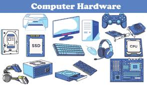
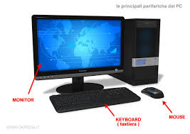

Hardware: La Parte Fisica del Computer
L'hardware comprende tutti i dispositivi fisici che permettono a un computer di funzionare. Senza l'hardware, il computer non sarebbe in grado di eseguire nessuna operazione. Esploreremo i principali componenti hardware, suddivisi in diverse categorie.
a) Schede
Le schede madri e le schede di espansione sono il cuore dell'hardware di un computer. Ogni componente hardware è collegato a queste schede per poter comunicare e interagire con gli altri dispositivi. Di seguito sono riportate le principali schede all'interno di un computer:
- Scheda madre (Motherboard): È la principale scheda su cui sono montati tutti gli altri componenti. Contiene il chipset che gestisce la comunicazione tra la CPU, la RAM, le schede video e di rete, le periferiche e le unità di archiviazione. La scheda madre ha anche slot per schede di espansione (come la scheda video o la scheda audio) e connettori per le periferiche come USB, porte audio, HDMI, ecc.
- Scheda video (GPU): La scheda grafica è responsabile per la gestione della grafica e dei video. Le GPU moderne sono sempre più potenti e vengono utilizzate anche per il calcolo parallelo in ambiti come l'intelligenza artificiale e il deep learning. Le schede video più avanzate sono dotate di numerosi core di elaborazione che consentono una gestione efficiente dei compiti grafici e computazionali.
- Scheda audio: La scheda audio gestisce la produzione e la registrazione del suono all'interno del computer. Esistono schede audio integrate nella scheda madre o dedicate, che offrono una qualità sonora superiore. Le schede audio moderne sono in grado di gestire una vasta gamma di formati audio e di fornire uscite per casse acustiche, cuffie, e microfoni.
- Scheda di rete (NIC): Le schede di rete consentono al computer di connettersi a una rete locale (LAN) o a Internet. Le schede di rete moderne supportano connessioni cablate (Ethernet) o senza fili (Wi-Fi), con velocità di trasferimento dati che variano in base al tipo di scheda e alla tecnologia utilizzata.
b) Cavi
I cavi sono necessari per collegare i componenti fisici del computer. Ogni cavo ha una funzione specifica e può essere utilizzato per trasferire segnali elettrici, dati o alimentazione. Alcuni dei cavi più comuni sono:
- Cavo di alimentazione: È il cavo che fornisce energia al computer. Può essere collegato alla fonte di alimentazione del PC o alla batteria di un laptop.
- Cavo USB: I cavi USB sono utilizzati per collegare dispositivi come tastiere, mouse, stampanti, e altri dispositivi di input/output. Esistono diverse versioni di cavi USB (USB 2.0, USB 3.0, USB-C), ognuna con una velocità di trasferimento dati maggiore rispetto alla precedente.
- Cavo HDMI: Il cavo HDMI è utilizzato per connettere il computer a monitor, TV o proiettori per la visualizzazione di contenuti video e audio di alta qualità.
- Cavo Ethernet: È un cavo utilizzato per connettere il computer a una rete cablata, garantendo una connessione Internet stabile e veloce.
c) Periferiche (Input, Output, Input/Output)
Le periferiche sono dispositivi esterni che si collegano al computer per estenderne le capacità. Le periferiche possono essere classificate in base alla loro funzione: input, output e input/output.
- Periferiche di input: Questi dispositivi permettono all'utente di inserire dati nel computer. Esempi comuni sono la tastiera, il mouse, il microfono e la webcam.
- Periferiche di output: Le periferiche di output forniscono informazioni all'utente. Esempi includono il monitor, le casse acustiche e le stampanti.
- Periferiche di input/output: Alcuni dispositivi possono sia ricevere che inviare dati. Esempi di queste periferiche sono il touchscreen, che consente all'utente di interagire sia con l'input che con l'output tramite un unico dispositivo.
 
torna a capitolo 2
Software: La Parte Intangibile del Computer
Il software è l'insieme di programmi e applicazioni che permettono di eseguire operazioni specifiche sul computer. Esistono diversi tipi di software, ognuno con una funzione ben precisa.
a) Firmware
Il firmware è un tipo di software che è incorporato direttamente nell'hardware di un dispositivo. Viene utilizzato per controllare e gestire il comportamento di dispositivi hardware specifici, come le schede madri, le schede di rete e le periferiche. A differenza dei normali programmi, il firmware è difficilmente modificabile dall'utente e viene spesso aggiornato dal produttore del dispositivo per migliorarne le prestazioni o correggere errori.
b) Sistemi Operativi
I sistemi operativi (OS) sono i programmi principali che permettono al computer di funzionare, gestire risorse e interagire con l'utente. Ogni computer ha un sistema operativo che si occupa di gestire le operazioni di base, come l'esecuzione di programmi, la gestione dei file e l'interfacciamento con le periferiche.
- Windows: Un sistema operativo sviluppato da Microsoft, conosciuto per la sua compatibilità con una vasta gamma di hardware e software. È uno dei sistemi operativi più utilizzati al mondo.
- macOS: Il sistema operativo di Apple, progettato per i computer Mac. È noto per la sua interfaccia utente elegante e la stretta integrazione con l'hardware Apple.
- Linux: Un sistema operativo open source che è utilizzato principalmente da sviluppatori e professionisti IT. Esistono diverse distribuzioni di Linux, tra cui Ubuntu, Fedora e Debian, ciascuna adatta a particolari esigenze.
- Android/iOS: Sistemi operativi mobili utilizzati su smartphone e tablet. Android è open-source, mentre iOS è sviluppato da Apple per dispositivi come iPhone e iPad.
c) Applicazioni
Le applicazioni sono programmi software che permettono di eseguire compiti specifici, come navigare sul web, scrivere documenti o modificare immagini. Le applicazioni possono essere di vari tipi, come applicazioni desktop, applicazioni web o applicazioni mobili.
- Applicazioni di produttività: Come Microsoft Word, Excel e Google Docs, che permettono di creare e modificare documenti, fogli di calcolo e presentazioni.
- Applicazioni multimediali: Come lettori video e audio (VLC, iTunes), software di editing grafico (Photoshop, GIMP), e programmi di editing video (Premiere Pro, Final Cut Pro).
- Applicazioni web: Programmi che funzionano direttamente su un browser web, come Google Drive, Slack e Facebook, senza la necessità di essere installati sul computer.
- Applicazioni mobili: App progettate per smartphone e tablet, come WhatsApp, Instagram, e Google Maps.